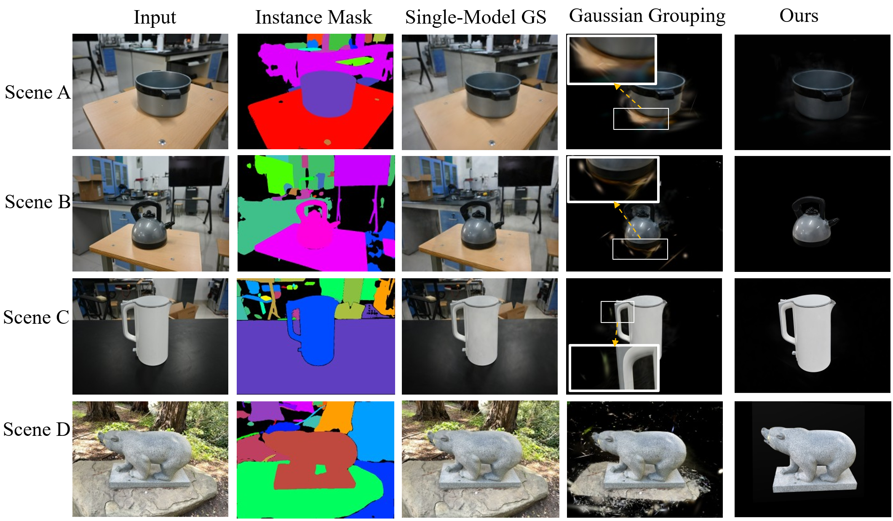
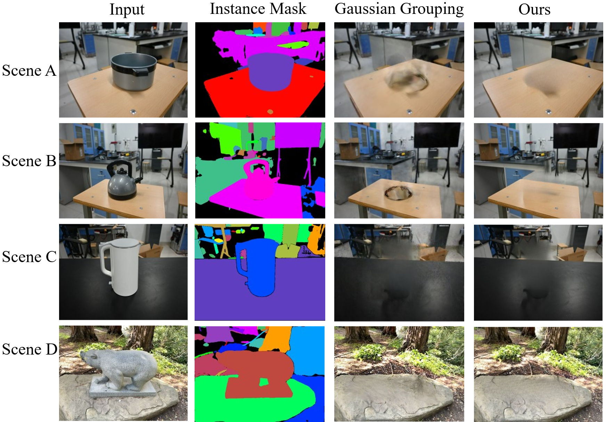
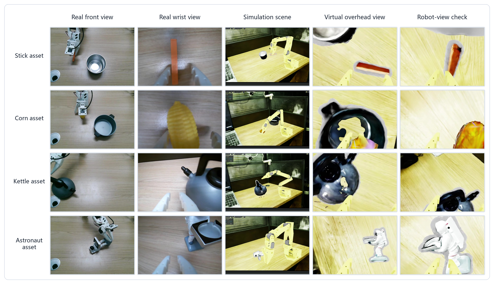

Real scene to editable Gaussian assets
DOGS separates the foreground object from the background, keeps both in a shared coordinate frame, and supports independent rendering plus scene recomposition.
Independent object Gaussian subspaces, background Gaussian recovery, parameter-level scene composition, and simulation-ready asset-interface checks
Real captured scenes are decomposed into independently renderable object Gaussian subspaces and a recoverable background Gaussian model.
The resulting Gaussian assets can be replaced, recomposed with the recovered background, and checked after conversion for Isaac Sim / Isaac Lab loading.
DOGS separates the foreground object from the background, keeps both in a shared coordinate frame, and supports independent rendering plus scene recomposition.

The decoupled asset is placed into a virtual scene with a robot arm to verify scale, visual placement, and simulation-side loading.


Object-level 3D scene representation requires models that preserve photorealistic appearance while exposing objects as independent, reusable components. Existing 3D Gaussian Splatting methods usually explain foreground objects and the background in a coupled Gaussian field, which can lead to ambiguous object ownership, background leakage, and structural adhesion near contact regions.
DOGS addresses this gap with an object-level decoupled 3D Gaussian representation. It optimizes each target in an independent object Gaussian subspace using cross-view consistent instance masks, foreground supervision, and mask-outside alpha suppression, while a separate background Gaussian model recovers object-removed regions. Parameter-level scene composition then recombines object subspaces and the background model without treating the scene as a single uneditable rendering result.
On seven public Mip-NeRF360 scenes, DOGS improves mean object-level metrics from 28.37 to 28.66 PSNR, from 0.861 to 0.878 SSIM, and from 0.191 to 0.176 LPIPS relative to Gaussian Grouping. Interface checks further verify independent export, USD/URDF packaging, Isaac Sim / Isaac Lab import, scale inspection, and collision-proxy availability. The evaluation is limited to visual asset provisioning and interface-level checks, not dynamics modeling or closed-loop task-performance validation.
DOGS moves explicit 3D Gaussian representation from coupled scene reconstruction toward object-level structured assets that can be independently managed, reused, and recomposed.
Instance-mask foreground supervision and mask-outside alpha suppression restrict each object model to its own support region and reduce non-target opacity responses.
Independent object and background Gaussian models are directly composed in a unified coordinate system, supporting scene reorganization, object replacement, mesh/collision proxy conversion, and robot-simulation import checks.
Evaluation links object reconstruction, background recovery, composed-scene consistency, and Isaac Sim / Isaac Lab asset-interface checks to the same object-level decoupling claim.
Each target instance is optimized as an independent object Gaussian model using multi-view RGB images and cross-view consistent instance masks.
L_object = L_obj-fg + lambda_alpha * L_obj-alpha
The background is trained after object regions are excluded, with LaMa-based completion priors and local geometry regularization for long-term occluded regions.
L_bg = L_bg-rgb + lambda_reg * L_bg-reg
Objects and background are directly merged in the shared world coordinate system and rendered using the standard Gaussian Splatting renderer.
G_scene = G_bg union {G_obj}



28.66 / 0.878 / 0.176
PSNR / SSIM / LPIPS on seven public Mip-NeRF360 scenes, compared against Single-Model GS and Gaussian Grouping under the paper's aligned reporting protocol.
28.72 / 0.876 / 0.177
Independent background modeling improves background purity and perceptual continuity.
28.20 / 0.935 / 0.101
Representative Mip-NeRF360 composed-scene PSNR / SSIM / LPIPS. Parameter-level composition keeps rendering stable without extra joint optimization.
Quantitative values are descriptive means reported with scene/object/seed fields in the manuscript. They support cross-scene trends and ablation directions rather than formal significance claims.
| Dataset | Method | PSNR (higher) | SSIM (higher) | LPIPS (lower) |
|---|---|---|---|---|
| LERF-Mask | Single-Model GS | 29.85 | 0.947 | 0.082 |
| LERF-Mask | DOGS Composed | 29.78 | 0.949 | 0.067 |
| Mip-NeRF360 | Single-Model GS | 28.12 | 0.932 | 0.112 |
| Mip-NeRF360 | DOGS Composed | 28.20 | 0.935 | 0.101 |
| LLFF | Single-Model GS | 25.95 | 0.904 | 0.128 |
| LLFF | DOGS Composed | 25.97 | 0.906 | 0.119 |
Independent asset export, USD/URDF packaging, Isaac Sim / Isaac Lab scene-tree import, scale inspection, and collision-proxy availability.
Dynamics modeling, contact stability, mass/inertia calibration, closed-loop control, and robot task-performance validation are outside the project-page claim.
The blind-review copy removes author names, affiliations, organization URLs, and author-identifying repository links. Code, asset manifests, and demo media should be distributed through the anonymized supplementary package associated with the submission.
The public project page and source repository can be restored after the review process by replacing this anonymous section with the final project URL, code URL, and author information.
@misc{qu2026dogs,
title = {DOGS: Object-Level Decoupled 3D Gaussian Scene Representation for Visual Reconstruction and Simulation-Ready Composition},
year = {2026},
note = {Blind-review project page and code release}
}